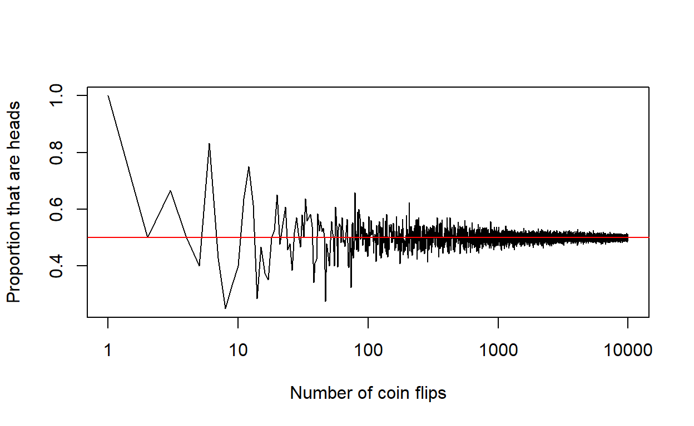

Week 4: Frequentism, hypothesis tests, & P-values
ANTH 674: Research Design and Analysis in Anthropology
Professor Andrew Du
Introduction
This week, we are moving on from describing our data using plots and descriptive statistics (e.g., mean, median, variance) and are now entering the realm of inferential statistics. Statistical inference is concerned with estimating, inferring, and understanding some property of some unknown statistical population by analyzing a sample from said population. Statistical inference plays a key role in scientific inference, where we want to understand something about some larger pattern or process from the data we collect.

By far, the most common type of statistical inference is frequentist inference (the counterpart is Bayesian inference; the two factions have a nasty, warring history with each other). Frequentism starts with a, often abstract and unknowable, statistical population, from which one sample out of theoretically infinity is taken. For example, let’s say I was interested in the mean stature of the Homo erectus species. FYI, this is what H. erectus looked like:

There is certainly a statistical population of all Homo erectus individuals who have ever lived, but the fossil record preserves only some individuals, and we can estimate stature only for those individuals. These individuals provide a sample, from which we make inferences about the unknown population. Let’s imagine the history of Earth is rewound and replayed and through sheer happenstance another set of H. erectus individuals is preserved for us to analyze. This is another replicate sample from the population, and we can imagine a theoretically infinite number of rewindings and alternate dimensions, which provides us with theoretically infinite sample replicates from the H. erectus statistical population.
If we wanted to instead analyze a statistical population that is knowable and measurable (e.g., the masses of all people who have landed on the Moon), then we wouldn’t need inferential statistics!
We will sharpen our understanding of how frequentism works through simulations in R. This is one of the best things about R: you can test/strengthen your intuition about certain concepts by simulating data! We will then learn about estimating some quantity of the population (i.e., parameter), which is ultimately unknown and can only be inferred through the sample. We will also quantify the uncertainty around parameter estimates with confidence intervals. And lastly, we will learn how P-values are used to test hypotheses about the population by analyzing data from the sample.
Therefore, the lecture and this tutorial cover the foundation of inferential statistics, which lays the groundwork for all the tests we’re going to learn about in weeks to come. In practice, these concepts become second-nature and are not explicitly thought about when analyzing data in one’s research. Thus, I will tend to emphasize the behavior of these statistics (e.g., confidence intervals, P-values) more than their theoretical underpinnings.
Goals for this tutorial
1) Continue the never-ending journey of familiarizing yourself with R.
2) Learn how to simulate different iterations of data using
for() loops.
3) Learn what frequentism is by taking random samples from a statistical population.
4) Learn what confidence intervals are and how they behave using simulations in R.
5) Learn what P-values are and how they behave using simulations in R.
The frequentist perspective
This section will teach you what frequentism is by conducting many of the simulations I used in lecture. Let’s start with coin flips.
Frequentist probability
According to a frequentist, probability is defined 100% empirically. That is, the probability of some event happening is defined as the long-run frequency of that event happening divided by the number of possible opportunities. For example, the probability of flipping heads is known to be 0.5 because if we were to flip a coin many, many times (preferably infinity), half of those flips would be heads. Let’s learn more about this through simulating random data.

A coin flip can either come up heads or tails. With two outcomes,
this is a binomial random variable (“random” because we don’t know with
100% certainty whether a given coin flip will come up heads or tails).
So, let’s use rbinom() to generate one trial of two coin
flips. The first argument is the number of trials to conduct, the second
argument is how many coin flips to do in one trial, and the third
argument is the probability of getting heads (i.e., 0.5). So, enter
rbinom(1, 2, 0.5) below. The answer you get is how many
heads you flipped.
# Click "Solution" if stuck# first argument is number of trials
hist(rbinom(10, 2, 0.5))
mean(rbinom(10, 2, 0.5))You might have gotten a 0, 1, or 2 because there is randomness (i.e., stochasticity) involved in flipping coins. You can rerun the code multiple times to see the three different outcomes.
Now let’s do the same but with 10 trials. Can you figure out which argument to modify? You can plot a histogram of the results and/or calculate the mean to see what the average number of heads is across 10 trials of 2 flips each. NB: “mean” is often used as shorthand for the arithmetic mean.
Now we’re starting to see the 0.5 probability (i.e., one head out of two flips) stabilize! Remember, we know the answer is 0.5 because we set it as such; 0.5 can be thought of as the population parameter (i.e., probability of flipping heads) that we’re trying to estimate from the sample.
Now let’s go crazy and set the number of trials to 10,000. If you make a histogram of your results, this is the sampling distribution of number of heads obtained with two coin flips (more on sampling distributions in Frequentism using measurements). That is, this is a distribution of our statistic of interest (i.e., number of heads out of two flips), where each data point is a trial/replicate drawn from the statistical population. The mean of this sampling distribution will be extremely close to the true population mean (i.e., one head out of two flips: 0.5 probability), given the large number of trials. Go ahead and calculate the mean of the sampling distribution and see what you get.
Instead of replicating two coin flips many times, we can also just
flip many, many coins in one replicate. Flip a coin 10,000 times by
entering rbinom(1, 10000, 0.5) and calculate the mean. The
observed proportion of heads (# heads divided by 10,000) should be very
close to 0.5. This
same concept is illustrated at this nifty interactive site.
FYI, if you want to create the figure from my lecture, you need to
know how to write a for() loop, which you will learn how to
do shortly. In the meantime, here is the code (the plot won’t look
exactly the same as in lecture, especially with smaller numbers of
flips, due to the stochasticity involved in flipping coins):
prop_heads <- array(dim = 10000)
for(i in 1:length(prop_heads)){
prop_heads[i] <- rbinom(1, i, prob = 0.5)
}
plot(
1:length(prop_heads),
prop_heads / 1:length(prop_heads),
type = "l",
log = "x",
xlab = "Number of coin flips",
ylab = "Proportion that are heads"
)
abline(h = 0.5, col = "red")
What you have just simulated and worked through is the law of large numbers: with a large sample size and/or many replicates, the mean will be an accurate estimate of the population mean.
Frequentism using measurements
We will stick to the example in lecture, where we’re interested in the average height of all adults on Earth (i.e., our statistical population). Clearly, it’s not possible to measure the height of every single individual, so we make some inference about the statistical population using samples drawn from it.
Our statistical population will be a normal distribution of heights
with mean = 5.5 and sd = 0.3. Instead of
plotting a histogram/density plot with an enormous sample size to
accurately approximate a normal distribution, I just plotted the
probability density function of the normal distribution. This can be
done with the code below.
x <- seq(4, 7, length.out = 1000)
plot(
x,
dnorm(
x,
mean = 5.5,
sd = 0.3
),
type = "l",
xlab = "Human height (feet)",
ylab = "Density"
)# Click "Solution" if stuckmean(rnorm(10, 5.5, 0.3))
# run this code multiple times to see the stochasticity involvedLet’s take a random sample of 10 individuals from this population,
using rnorm(n = 10, mean = 5.5, sd = 0.3). What is the mean
of this sample’s heights? Perhaps close to the true population mean of
5.5 but probably different. Try the same exact code again, and see how
the mean differs due to variation in the underlying population and the
stochasticity involved in sampling. NB: If you wanted
to make sure you randomly drew the same numbers every time, you can do
so by using set.seed() and setting it to a fixed number,
e.g., set.seed(100). This is useful when publishing code,
so your results are 100% replicable.
If your sample size is huge (e.g., 10,000 individuals), the mean of your sample will be very close to the population mean. Give that a try above.
As with the coin flip example, let’s construct a sampling
distribution of means and see what that looks like. But to do so, we
need to first learn how to write a for() loop.
Writing for() loops
for() loops lie at the heart of simulations in R. They
are a way to iterate something multiple times to explore the underlying
variation in the process you’re studying (e.g., sampling distribution of
means drawn from a population). They can also be intimidating, but I
will walk you through how they work.
Again, you use a for() loop if you want to
iterate/repeat something many, many times. They first start with the
for() function, within which are the numbers you want to
iterate through, assigned to some object name (usually i).
The for() function is followed by curly braces,
{}, within which is the code you want to iterate multiple
times. Let’s go through a simple example together to make things
clearer.
Let’s start with something silly. Let’s say I wanted to print the
numbers 1 through 10. We will write a for() loop to do
this.
The proper code is this:
for(i in 1:10){
print(i)
}## [1] 1
## [1] 2
## [1] 3
## [1] 4
## [1] 5
## [1] 6
## [1] 7
## [1] 8
## [1] 9
## [1] 10What is going on here? Let’s see what the for() loop is
doing step by step.
The
i in 1:10withinfor()is telling R to conduct 10 iterations, whereiis first1, then2, and so on and so forth untili = 10. So,i = 1during the first iteration.Now we enter the curly braces. I like to think of curly braces as the repeat signs in sheet music. So with
i = 1, we enter the opening curly brace and approachprint(i), which is telling R to printi, i.e.,1.

We then hit the closed curly brace, which tells us the iteration where
i = 1is over. We now go back to the opening curly brace (i.e., Step 2), but nowi = 2.We loop through Steps 2 and 3 with
iincreasing by1every time until we reach the end, i.e., wheni = 10.
What do you think will happen if you enter:
for(i in c(1, 3, 5)){
print(i)
}What about:
for(i in 1:10){
print(i * 2)
}Test out your predictions below.
More commonly, for() loops are used to iterate through
something and then save the results. For example,
rbinom(10, 2, 0.5) returns a vector, where each of the 10
elements is the number of heads out of two coin flips. We can actually
do the same thing with a for() loop where each iteration is
one set of two coin flips (though using rbinom(10, 2, 0.5)
is far easier).
To do this, we have to first create an empty vector to save our 10
results to. This is common practice in for() loops. We then
iterate through numbers 1 through 10, each time flipping two coins,
i.e., rbinom(1, 2, 0.5), and then save the results to the
\(i\)th element of the empty
vector.
# empty vector of length 10 called rbinom10
rbinom10 <- array(dim = 10)
# iterating through 1 to 10, with each number assigned to i each time.
# Even better to soft code and type length(rbinom10) instead of 10
for(i in 1:10){
# for each iteration where i = 1, 2, 3, ...10, generate number of heads from two coin flips and save the result to the ith empty element in rbinom10
rbinom10[i] <- rbinom(1, 2, 0.5)
}Try out the code above.
We will practice for() loops with the following
exercises.
Exercise 1: for() loops
Similar to the previous
rbinom()for()loop, create a vector of 10 elements calledrnorm10, where each element is the mean of 100 observations drawn from a normal distribution withmean = 0andsd = 1. Hint: you want to usernorm().Take a vector of numbers
x <- c(10, 8, 14, 22, 32), and use afor()loop to iterate through log-transforming each element. Save the log-transformed elements to a new vector calledlog_x. You can check your answers againstlog(x), which accomplishes the same thing.
# Click the "Solution" button when done# Q1
rnorm10 <- array(dim = 10)
for(i in 1:length(rnorm10)){
rnorm10[i] <- mean(rnorm(100, mean = 0, sd = 1))
}
# Q2
log_x <- array(dim = length(x))
for(i in 1:length(log_x)){
log_x[i] <- log(x[i])
}Frequentism using measurements (cont’d)
Sampling distribution of the mean
Question 1 from Exercise 1 is pretty much the code we want for
generating a sampling distribution of means, sampled from a statistical
population whose mean = 5.5 and sd = 0.3. So,
can you generate a sampling distribution of 1,000 means, each of which
is calculated on 100 observations drawn from the population of
heights?
# Click "Solutions" button if stucknorm_samp_dist <- array(dim = 1000)
for(i in 1:length(norm_samp_dist)) {
norm_samp_dist[i] <- mean(rnorm(100, mean = 5.5, sd = 0.3))
}Remember, the sampling distribution is defined as the distribution of
a statistic (e.g., mean, median), obtained from a large number
of samples drawn from the population. It is NOT a distribution
of the observations in your sample. In a sampling distribution, each
data point is a mean (or some other statistic), calculated from a sample
obtained from the statistical population. Each data point in a
distribution of observations from a sample is just that: an observation;
to plot this, you would enter
hist(rnorm(100, mean = 5.5, sd = 0.3)) to get a sample of
100 observations from the statistical population. Do this and compare it
to the histogram of the sampling distribution of means. The latter has
smaller spread because the data points are means, each of which is
distilling its respective original distribution of observations into its
central tendency.
Here is another interactive activity that illustrates what a sampling distribution is.
Sampling distribution of means from a non-normal distribution
Let’s repeat the previous sampling distribution of means exercise,
but this time we’ll use a non-normal distribution for the statistical
population: the lognormal with meanlog = 1.5 and
sdlog = 0.5.
Let’s first create a plot of the statistical population to see what its distribution looks like. I’ve done so for you using the code below:
x <- seq(0, 40, length.out = 1000)
plot(
x,
dlnorm(
x,
meanlog = 1.5,
sdlog = 0.5
),
xlab = "",
ylab = "Density",
type = "l"
)You can see the population distribution is not normal.
To create the sampling distribution of means, you can reuse your
for() loop code above, this time replacing
rnorm() with rlnorm(), mean = 5.5
with meanlog = 1.5, and sd = 0.3 with
sdlog = 0.5. Call the vector a new name if you’d like. Make
a histogram of your results. What does the distribution look like?
# Click "Solution" button if stucklnorm_samp_dist <- array(dim = 1000)
for(i in 1:length(lnorm_samp_dist)) {
lnorm_samp_dist[i] <- mean(rlnorm(100, meanlog = 1.5, sdlog = 0.5))
}It’s normal! This is the central limit theorem (CLT): no matter the shape of the underlying population distribution, the sampling distribution of means (or sums) will be normally distributed with a large enough sample size (in our case, we used 100). The link above is a good illustration of the CLT, and you can test it out on all kinds of population distribution shapes.
The CLT is incredibly important in statistics as many procedures require a normally distributed sampling distribution (e.g., confidence intervals, t-tests).
Standard error
The mean of a sampling distribution provides us with an estimate of a population parameter (e.g., population mean). To characterize the variability (i.e., uncertainty) surrounding our estimate, we calculate standard errors and confidence intervals.
If the mean of a sampling distribution provides us with an estimate of the population parameter, then a natural measure of variability surrounding that estimate might be the standard deviation of the sampling distribution. In fact, this is exactly what a standard error is: the standard deviation of the sampling distribution. Note that we can use the mean and SD because the CLT guarantees our sampling distribution of a mean or sum parameter will be normal!
Let’s look at the sampling distribution of means we created earlier
(i.e., norm_samp_dist). Here is the code again:
norm_samp_dist <- array(dim = 1000)
for(i in 1:length(norm_samp_dist)){
norm_samp_dist[i] <- mean(rnorm(100, mean = 5.5, sd = 0.3))
} Now calculate the standard error by calculating the standard
deviation of norm_samp_dist. The standard error provides a
measure of uncertainty surrounding our population parameter
estimate.
NB: The standard error is NOT the standard deviation, even though the two are often confused for each other. The standard error is the standard deviation of the sampling distribution, and the standard deviation is the standard deviation of a sample of observations. Thus, the distinction between standard error and standard deviation is pretty much the same as the distinction between a sampling distribution and one sample of observations. As mentioned earlier, the sampling distribution has less spread than a sample of observations. Therefore, the standard error will always be smaller than the standard deviation.
Standard error as calculated from an equation
Most times in research, we have no idea what the sampling distribution of a statistic looks like because we do not have multiple sample replicates from a population. Luckily, very smart statisticians were able to come up with formulas to infer properties of the sampling distribution from one sample/replicate only.
The formula for standard error is \(s / \sqrt{n}\), where \(s\) is the standard deviation of the sample, and \(n\) is the sample size. This formula emphasizes that (1) standard error and standard deviation are not the same thing and (2) the standard error is always smaller than the standard deviation because \(n > 1\).
Let’s generate one random sample of 100 observations from our
normally distributed population with mean = 5.5 and
sd = 0.3 (hopefully you know how to do this by now).
Calculate the standard error using the equation above and compare it to
the standard error value you calculated earlier (by calculating SD on
the sampling distribution).
# Click "Solution" if stuckx <- rnorm(100, 5.5, 0.3)
sd(x) / sqrt(length(x))Confidence intervals
Confidence intervals are defined as a “range of plausible values for an unknown parameter” (from Wikipedia).
In most scientific fields, we use a significance level (\(\alpha\)) of 0.05, which means we will falsely reject a hypothesis 5% of the time if it’s true. What this means will become clearer when we go over the behavior of confidence intervals and P-values.
\(\alpha=0.05\) translates to 95% confidence intervals, which are the middle 95% of a sampling distribution. Let’s again use our sampling distribution of means from before:
norm_samp_dist <- array(dim = 1000)
for(i in 1:length(norm_samp_dist)){
norm_samp_dist[i] <- mean(rnorm(100, mean = 5.5, sd = 0.3))
} # Click "Solution" if stuck# get sample from population
x <- rnorm(100, 5.5, 0.3)
# calculate standard error
se.x <- sd(x) / sqrt(length(x))
# calculate 95% CI
c(mean(x) - 1.96 * se.x,
mean(x) + 1.96 * se.x)The middle 95% can be obtained using
quantile(norm_samp_dist, c(0.025, 0.975)), which returns
the 2.5% and 97.5% percentiles (can you reason out why we use these
numbers?). Go ahead and try out the code above.
Calculating confidence intervals using a formula
Again, we use formulas whenever we have only one sample/replicate and have no idea what the sampling distribution looks like. To calculate 95% CI in this manner:
- Calculate the standard error, which you know how to do from the previous topic.
- The lower confidence limit equals the sample mean minus 1.96 times the standard error.
- The upper confidence limit equals the sample mean plus 1.96 times the standard error.
Why 1.96? Remember the 68-95-99.7 rule, where +/- two standard deviations equals the central 95% of a normal distribution. More precisely, it’s 1.96, not 2.00.

Try this out on a random sample of 100 observations from the
population (mean = 5.5, sd = 0.3). Compare the resulting
95% CI with that obtained using the quantile() function on
the sampling distribution.
Hypothesis tests using confidence intervals
Recalling that confidence intervals are calculated for a parameter
estimate (in this case, the population mean), we can use them to test
hypotheses about the population parameter. For example, if we wanted to
know if the population mean of our human heights is significantly
different from 6 feet, we would see if 6 feet falls outside our
calculated 95% CI. If so, 6 feet would be an unlikely value, given our
sampling distribution (you can see how likely 6 feet is in the
norm_samp_dist sampling distribution by creating a
histogram). Therefore, we conclude that our population mean is
significantly different from 6 feet.
If 6 feet falls within the 95% confidence interval, this DOES NOT mean that the population mean is 6 feet. This will become clearer when we go over how sample size affects 95% confidence intervals.
Bootstrapping
These days with fast computing, we can use Monte Carlo methods to “brute force” create the sampling distribution of a statistic from the sample itself.
Monte Carlo is a class of methods that uses repeated random sampling to obtain numerical results. Monte Carlo is the name of the famous gambling resort city on the Riviera.

So how do we create a sampling distribution from the sample? We need
to resample our observations with replacement using the
sample() function.
Let’s see how this function works with a simple example first. Enter
sample(1:5, replace = TRUE) below.
Notice that each element is a random sample from the 1:5
vector. You sometimes get repeated elements (keep entering the code
until you see this) because after an element is randomly selected from
1:5, the element is replaced so it can potentially be
sampled again. This is what we mean by “sampling with replacement”, and
it is achieved with the argument replace = TRUE.
Why does resampling a vector with replacement create a sampling distribution? First recall that each data point in a sampling distribution is a statistic (e.g., mean) calculated on one sample from the population. Each resampling iteration during bootstrapping represents a different sample drawn from the population. This works because the original, observed sample is a random, representative draw from the population. Therefore during bootstrapping, we treat our observed sample as a proxy for the population. The resampling with replacement from the oberved sample imitates multiple samples drawn from the population. Of course, the larger your sample is, the more likely it will match the population distribution and the more accurate your sampling distribution will be.
After each resampling iteration, you calculate your statistic of interest and save the result. You repeat this step many, many times (at least 1000x) to get a sampling distribution for the statistic of interest.
The great thing about bootstrapping is that you can create a sampling distribution for any statistic you want. This includes statistics for which there are no good theories or formulas for calculating standard error (e.g., the median). As a result, you can create confidence intervals and conduct hypothesis tests using virtually any statistic you can think of (as long as it can be calculated on your sample). Hopefully, you can now see how powerful and useful bootstrapping is!
Bootstrapping in action
Let’s once again create a random sample of 100 normally distributed
observations from our population (mean = 5.5, sd = 0.3);
you can assign these numbers to the object x. I will
present each coding step involved in bootstrapping the sampling
distribution for the population mean.
- Create an empty vector of length 1,000 since we will do 1,000
bootstrap iterations (feel free to do more if your computer is fast
enough!); assign this empty vector to an object (e.g.,
boot_dist). - Initiate a
for()loop, whereigoes from1to the length of the empty vector (i.e.,boot_dist). - Within the curly braces, resample with replacement the vector of 100
normally distributed observations (i.e.,
x); you can save the 100 resampled numbers to a new object (e.g.,x_boot). - Calculate the mean of the object, and save the result to the \(i\)th element of your empty vector (i.e.,
boot_dist). Then close the curly braces.
Try this out below.
# Click "Solution" button if stuckx <- rnorm(100, 5.5, 0.3)
boot_dist <- array(dim = 1000) # Step 1
for(i in 1:length(boot_dist)){ # Step 2
x_boot <- sample(x, replace = TRUE) # Step 3
boot_dist[i] <- mean(x_boot) # Step 4
}Congratulations! You just bootstrapped your first sampling distribution!
You can now calculate the standard error (SD of sampling
distribution) and 95% CI (using quantile() on the sampling
distribution).
You can also explore all this through this awesome interactive activity.
Exercise 2: standard error & confidence intervals
We will analyze the Sepal.Length variable from the
iris dataset.
Bootstrap the sampling distribution of the mean.
Calculate the standard error and 95% CI of the mean from the sampling distribution.
Compare the bootstrapped standard error and 95% CI to those calculated using formulas.
# Click the "Solution" button when done# Q1
sepal_length_dist <- array(dim = 1000)
for(i in 1:length(sepal_length_dist)){
sepal.length_boot <- sample(iris$Sepal.Length, replace = TRUE)
sepal_length_dist[i] <- mean(sepal.length_boot)
}
# Q2
# standard error
sd(sepal_length_dist)
# 95% CI
quantile(sepal_length_dist, c(0.025, 0.975))
# Q3
sepal.length_se <- sd(iris$Sepal.Length) / sqrt(length(iris$Sepal.Length))
sepal.length_mean <- mean(iris$Sepal.Length)
sepal.length_ci <- c(
sepal.length_mean - 1.96 * sepal.length_se,
sepal.length_mean + 1.96 * sepal.length_se
)Confidence intervals and the true parameter value
It is often thought that a single 95% CI represents the range of values where there’s a 95% chance the true parameter value is inside. This interpretation is NOT correct. In frequentist statistics, the parameter value is fixed, and the confidence intervals move around due to the stochastic nature of drawing samples from the population (in Bayesian inference, it’s the complete opposite: the sample is fixed and the parameter is treated as random!). Therefore, for each iteration of a CI, it either captures the true parameter value or misses it. Given the preset significance threshold of \(\alpha = 0.05\), 5% of confidence intervals will miss the parameter value on average.
NB: For a given \(\alpha\) level, the corresponding CI is set at \((1 - \alpha)\)%. This is why 95% CI are so common in scientific research (i.e., because \(\alpha\) is almost always set at 0.05).
Let’s conduct some simulations to see all this in action.
We will recreate the figure from my lecture, keeping in mind that the
CI won’t look exactly the same due to the stochasticity involved in
sampling from a population. What we want to do is calculate 50 CI for
the mean of a normally distributed population that has
mean = 0, sd = 1 (i.e., the default rnorm()
arguments). With 50 CI, on average 2.5 will miss the true mean (i.e.,
0), so we’re expecting 2 or 3 CI to miss (though you might get 4 or none
due to stochasticity!).
I will tell you how to code this step by step.
- Create an empty array, called
ci.res, with 50 rows and 2 columns (rows for 50 CI and one column each for the lower and upper CI limit, respectively); this is done withci.res <- array(dim = c(50, 2)). - Use a
for()loop to iterate through each row, i.e.,i in 1:nrow(ci.res). - Save to an object,
x, 100 randomly sampled observations from the normally distributed population withmean = 0, sd = 1; this is done withrnorm(100). - Calculate standard error using SD divided by square-root of sample
size (i.e., 10); save this to an object called
se. - Calculate the lower confidence limit as
mean(x) - 1.96 * seand save this toci.res[i, 1]. - Calculate the upper confidence limit as
mean(x) + 1.96 * seand save this toci.res[i, 2]. - Click the “Solution” button for code on how to make the plot.
# Click "Solution" button if stuckci.res <- array(dim = c(50, 2))
for(i in 1:nrow(ci.res)){
x <- rnorm(100)
se <- sd(x) / sqrt(length(x))
ci.res[i, 1] <- mean(x) - 1.96 * se
ci.res[i, 2] <- mean(x) + 1.96 * se
}
plot(
1,
type = "n",
xlim = c(1, nrow(ci.res)),
ylim = range(ci.res),
main = "50 replicates",
xlab = "Replicate number",
ylab = "Value"
)
segments(
1:nrow(ci.res),
y0 = ci.res[, 1],
y1=ci.res[, 2],
lwd = 2
)
abline(h = 0, col = "red")How many CI missed the true value of the population mean, i.e., 0 (you might need to scroll to the right to see the whole plot)?
So, let’s say you calculate 95% CI on a sample of data you’re analyzing. Your calculated CI is equivalent to one of the CI segments calculated above. Therefore, there is a 5% chance that your CI completely missed the true parameter value, i.e., you were unlucky :(.
You can also explore all this through this awesome interactive activity.
Confidence intervals and sample size
Confidence intervals shrink as sample size increases because the law of large numbers tells us that population parameters (e.g., the mean) are estimated more precisely with larger sample sizes. That is, each, mean in the sampling distribution will be pretty close to the true population mean, such that the spread of the sampling distribution will be small (which causes CI to be small).
We will explore this behavior through simulations by again recreating
a figure from my lecture (again, realizing that the CI won’t look
exactly the same). We will create CI using samples of different
sizes that are drawn from a normally distributed population with
mean = 0, sd = 1. Again, I will walk you through the code
step by step.
- Let’s first create a vector of sample sizes:
n <- c(5, 10, 25, 50, 100, 250, 500, 1000, 2500, 5000, 10000). - Now create an empty array that has
length(n)rows and two columns (we’re going to create one CI for each sample size, and each column is for the lower and upper CI limit, respectively). - Use a
for()loop to iterate through the rows, i.e.,i in 1:nrow(). - Use
rnorm()to draw observations from the population distribution with sample size equal to the \(i\)th element from vectorn. Can you figure out how to do that? - The remainder of the code follows Steps 4–6 from the previous topic (i.e., calculate 95% CI using the standard error formula). Can you code the steps without looking back (look back or click the “Solution” button if you have to)?
- Click the “Solution” button to see code for creating the plot.
# Click "Solution" button if stuckn <- c(5, 10, 25, 50, 100, 250, 500, 1000, 2500, 5000, 10000)
ci.n <- array(dim = c(length(n), 2))
for(i in 1:nrow(ci.n)){
x <- rnorm(n[i])
se <- sd(x) / sqrt(length(x))
ci.n[i, 1] <- mean(x) - 1.96 * se
ci.n[i, 2] <- mean(x) + 1.96 * se
}
plot(
1,
type = "n",
xlim = range(n),
ylim = range(ci.n),
main = "",
xlab = "Sample size",
ylab = "Value",
log = "x"
)
segments(
n,
y0 = ci.n[,1],
y1 = ci.n[,2],
lwd = 2
)
abline(h = 0, col = "red")So, the takeaway here is that as sample size increases, the CI will shrink around the true value (though the phenomenon of 5% of CI missing the true value still applies here!). As a result, you can be pretty confident that you know what the true parameter value is, which is great if you want to use data to corroborate some predicted value from a hypothesis. It also means that your CI will pretty much exclude every value except the parameter, such that the estimated mean will be significantly different from all other values. Lastly, this exercise emphasizes how a value capture by the CI does not mean it’s the true parameter value: the shrinking of CI with larger sample size almost guarantees that that value will be excluded.
P-values
P-values are some of the most emphasized statistics in research, often used to determine whether an effect is “real” or not. This is not entirely accurate, and we will see why with simulations.
P-values are defined as the probability of obtaining the observed data or more extreme, assuming a hypothesis is true. The hypothesis in question is usually the null hypothesis (e.g., effect is 0, group difference is 0). This is because zero effects are easy to work with, since we know what the true parameter value is: zero. But, the null hypothesis is also often the least interesting hypothesis, as nothing is truly zero in biology or anthropology. This means we know that the null hypothesis will be falsified even before we conduct the test; we just need a large enough sample size. We’ll see how this works in P-values and sample size.

To sharpen your understanding of what a P-value is, we will use bootstrapping to see if the means of two groups are significantly different from each other (i.e., P < 0.05).
Testing if two group means are significantly different
Again, we will use an example from lecture.
We have two groups of human adult heights. We want to test if their
means are significantly different from each other. I have saved the two
groups for you as two vectors, x and y, and
have plotted their densities curves below.
You can see that the means are indeed different, but there is a lot of overlap between the two distributions. See what the sample size and mean height of each group is below.
# Click "Solution" if stucklength(x); length(y)
mean(x); mean(y)Now, we will use bootstrapping to calculate a P-value, testing the null hypothesis that there is no difference between the means of both groups’ populations (as if both groups sample the same population). That is, the observed mean difference we see in our samples is simply due to chance sampling from a single population. Bootstrapping is perhaps the clearest way to really understand what a P-value is, as you have to code all the steps involved.
Recipe for a null hypothesis test
From the lecture, the steps are as follows:
- Pick a test statistic.
- Assume the null hypothesis is true.
- Create the null sampling distribution of the test statistic, assuming Step 2.
- Calculate the probability of getting the observed test statistic or more extreme (i.e., tail probability), given the null distribution. This is our P-value.
Step 1 (pick a test statistic)
Because we want to see if the two groups’ means differ, the difference in means (i.e., mean difference) seems to be the natural choice.
Step 2 (assume the null hypothesis is true)
We are assuming that both groups sample the same population.
Step 3 (Create the null sampling distribution of test statistic, assuming Step 2)
Recall that with bootstrapping, we use our sample as a proxy to
represent the population. So if both of our samples come from the same
population (assuming the null hypothesis is true), what would the
population proxy look like? Because x and y
sample the same population, we just combine them into one vector, thus
representing one population! You can create a histogram of
c(x, y) to see what the new population distribution looks
like. Also, save c(x, y) to an object, as you’ll need to
resample from this vector later.
# Click the "Solution" button if stuckNow, we need to use a for() loop and
sample() to iteratively resample from this “population”
vector to create new bootstrapped samples of x and
y. The steps are as follows:
- Create an empty array, whose length is 1,000 (number of bootstrap iterations).
- Use a
for()loop to iterate through1to the length of the empty vector. - Sample from the “population” vector with replacement, so that the
number of elements equals
length(x)(this is the second argument insample()). This is your new sample ofx(but call it a different object) from the combined null population distribution. - Do the same for your new sample of
y, i.e., uselength(y); call it a different object name. - Calculate the mean difference between the two bootstrapped samples
(do resampled
xminus resampledy), and save this to the \(i\)th element of your empty vector.
pop <- c(x, y)
boot_diff <- array(dim = 1000)
for(i in 1:length(boot_diff)){
x1 <- sample(pop, length(x), replace = TRUE)
y1 <- sample(pop, length(y), replace = TRUE)
boot_diff[i] <- mean(x1) - mean(y1)
}You can use hist() to see how your mean difference
sampling distribution looks, assuming that the null hypothesis is true
(i.e., both groups sample the same population).
Step 4 (Calculate the P-value, i.e., the probability of getting the observed test statistic or more extreme, given the null distribution)
This probability can be determined by counting the number of null distribution values that are equal to or more extreme than the observed test statistic. What does “equal to or more extreme” mean? That depends on whether we want to conduct a two- or one-tailed test.
Whether we calculate a two- or one-tailed P-value depends on our
research question. Two-tailed tests are used if we’re only concerned
with whether the group means are different, not whether one group
specifically has a larger mean than the other. A one-tailed test is used
if we want to test whether the larger group (i.e., x) is
significantly larger on average than the smaller group (i.e.,
y).

For either test, we first calculate the observed test statistic
(i.e., the mean difference: mean(x) - mean(y)). Save this
to an object called obs_diff.
For a two-tailed test, we want to count the number of null
distribution values that are greater than or equal to
obs_diff but also less than or equal to
-1 * obs_diff. Why is this? This is because our
bootstrapped iterations randomly assigned heights (with replacement) to
new samples of x and y, such that sometimes
mean(x) was larger and sometimes mean(y) was
larger (thus, sometimes the mean difference was positive and sometimes
it was negative). Because we’re not concerned with which group is
larger, we need to consider the null distribution values in either side
of the tail (see image above). We then divide this number by the total
number of iterations (i.e., 1,000) to get the proportion of null
distribution values equal to or more extreme than the observed test
statistic.
Go ahead and calculate a two-tailed P-value (x and
y are loaded in the console below, but you’ll have to rerun
the bootstrap code). You can do this by using a logical statement to
count the number of null distribution values that are greater than or
equal to obs_diff or less than or equal to
-1 * obs_diff. Divide this number by 1,000 (the number of
iterations).
# Click "Solution" if stuck# Observed mean difference
obs_diff <- mean(x) - mean(y)
# Bootstrap code from above
pop <- c(x, y)
boot_diff <- array(dim = 1000)
for(i in 1:length(boot_diff)){
x1 <- sample(pop, length(x), replace = TRUE)
y1 <- sample(pop, length(y), replace = TRUE)
boot_diff[i] <- mean(x1) - mean(y1)
}
# Two-tailed P-value
sum(boot_diff >= obs_diff | boot_diff <= -obs_diff) / 1000
# Using absolute values also works.
# Can you figure out why?
sum(abs(boot_diff) >= abs(obs_diff)) / 1000
# One-tailed P-value
sum(boot_diff >= obs_diff) / 1000To calculate a one-tailed P-value, we are concerned with the
direction of difference: whether the larger group, x, is
significantly larger than y. For this type of P-value, we
want to count the number of null distribution values that are greater
than or equal to obs_diff and divide this number by 1,000.
Calculate this above.
You can compare your calculated P-values with those derived from a
parametric test, the t-test. This test is used to see whether the means
of two groups are significantly different. For a two-tailed test, enter
t.test(x, y). For a one-tailed test, enter
t.test(x, y, alternative = "greater").
Summary
Hopefully by bootstrapping a P-value, you can see exactly what a P-value is: the probability of obtaining the observed test statistic or more extreme, assuming the null hypothesis is true (and its respective null sampling distribution). That is, the proportion of null distribution values that are equal to or more extreme than the observed test statistic (for a one-tailed test).
Exercise 3: Bootstrapping P-values
For this exercise, we are going to use Student’s sleep data (Student
was the statistician who invented the t-test). This dataset is called
sleep. Enter ?sleep to see what this dataset
is.
- See if the mean increase in hours of sleep (
extra) was significantly different betweengroup == 1andgroup == 2. Do this by calculating a two-tailed P-value using bootstrapping. Compare this P-value to the one obtained using a two-tailed t-test (t.test()).
# Click "Solution" button when done # note that group 2's mean is larger
obs_diff <- mean(sleep$extra[sleep$group == 1]) - mean(sleep$extra[sleep$group == 2])
boot_diff <- array(dim = 1000)
for(i in 1:length(boot_diff)){
# sleep$extra is already the two groups' data combined
boot1 <- sample(sleep$extra, sum(sleep$group == 1), replace = TRUE)
boot2 <- sample(sleep$extra, sum(sleep$group == 2), replace = TRUE)
boot_diff[i] <- mean(boot1) - mean(boot2)
}
sum(abs(boot_diff) >= abs(obs_diff)) / length(boot_diff)
# using mean() works too. Can you figure out why?
mean(abs(boot_diff) >= abs(obs_diff))
t.test(sleep$extra[sleep$group == 1], sleep$extra[sleep$group == 2])Type I error
Type I error is falsely rejecting the null hypothesis when it is true. The probability of committing this error is equivalent to the preset significance level (\(\alpha\)), which is 0.05 in most scientific fields (i.e., the probability of committing a Type I error is 5%). We will go over Type II error in the next topic.

Type I error happens because you can get a large effect just by
chance even if there is no effect in the underlying statistical
population. For example, look at the null sampling distribution below
(i.e., the sampling distribution of a test statistic, assuming the null
hypothesis is true). We can see that most values cluster around zero, as
expected, but there are some values that, though rare, are quite large.
If we sample from a distribution enough times, we will eventually sample
the rare values in the tails. You can give this a shot with
rnorm() by comparing max(rnorm(10)) with
max(rnorm(10000)), i.e., with a small sample size you will
likely not sample rare large values, but you will with a larger sample
size. This is essentially Murphy’s Law: “Anything that can go wrong will
go wrong”. This is because anything that can happen with a non-zero
probability (even if it’s extremely low) will happen given a
large enough sample size. You can illustrate this with
sum(rbinom(1, 100000, 0.0001)), which is how many times
something with a 0.0001 probability of occurring will happen if given
100,000 opportunities.

The gray regions in the figure above indicate test statistic values that if obtained, means our test is significant. We can see that we will sample values in the gray regions 5% of the time, even if the null hypothesis is true (the gray regions comprise 5% of the area under the curve; this is the criterion used for determining how large a test statistic needs to be to be significant at \(\alpha = 0.05\)).
We can illustrate all this with (surprise, surprise!) simulations.
Let’s calculate 1,000 P-values using a two-tailed t-test, assuming the
null hypothesis is true (i.e., both groups sample populations that have
the same exact mean). Let’s also save the mean differences associated
with each P-value to see what the large ones with P < 0.05 look like.
We will use rnorm(50), where mean = 0, sd = 1,
for coding simplicity.
Here are the steps:
- Create TWO empty vectors of length 1,000 for saving the P-values and mean differences.
- Use a
for()loop to iterate through 1 to the length of one of those vectors. - For one group, sample 50 observations from a normal distribution
with
mean = 0, sd = 1. - Repeat Step 3 for the other group.
- Save the mean difference between groups to the \(i\)th element of one of your vectors.
- Calculate a t-test on your two samples. To get the P-value, you need
to use
$, i.e.,t.test()$p.value. - Save the P-value to the \(i\)th element of your other vector.
# Click the "Solution" button if stuck# Step 1
p_vals <- mean_diff <- array(dim = 1000)
# Step 2
for(i in 1:length(p_vals)){
# Step 3
x <- rnorm(50)
# Step 4
y <- rnorm(50)
# Step 5
mean_diff[i] <- mean(x) - mean(y)
# Steps 6 & 7
p_vals[i] <- t.test(x, y)$p.value
}
sum(p_vals <= 0.05) / length(p_vals)
mean(p_vals <= 0.05) # works too
hist(p_vals)
hist(mean_diff)
abline(v = mean_diff[p_vals <=0.05], col = "red")What proportion of your P-values is less than or equal to 0.05 (this should be close to 0.05)?
You can plot the sampling distribution of your P-values. It’s uniform! You get all kinds of P-values if your null hypothesis is true! This result also emphasizes that the P-value is not the probability your null hypothesis is correct (otherwise, we should see a huge spike of P-values at 1.0).
Now plot the distribution of your mean differences (this is the null
sampling distribution). As a quick way to plot your significant mean
differences, use abline() and set argument v
equal to those mean differences associated with P-values less than 0.05
(make the lines red). You can see that these mean differences are
unusually large, even though the true mean difference is zero (as we
stipulated). Again, given enough trials, we will sample the
extreme tails of the distribution. FYI, the two-tailed critical values
here (i.e., the values that need to be exceeded by the observed test
statistic to get P < 0.05) are -0.397 and 0.397.
Summary
We don’t know whether the null hypothesis is true or not (after all, this is why we conduct the statistical test!). If the null hypothesis is indeed true, we would (unknowingly) find a significant result 5% of the time. Conduct enough tests, and we will get a significant result (not good)! That’s why my philosophy is to calculate as few P-values as possible (more on this in a future week).
BUT, the null hypothesis is almost never true, and that leads us to our final topic.
P-values and sample size
As I mentioned in lecture, three things affect P-values. Using the example of comparing the means of two groups, P-values will go down if:
- Mean difference is larger.
- Variation among observations in each sample decreases.
- Sample size of each group increases.
Basically, these three things act to decrease the overlap between the sampling distributions of these samples’ means, such that their mean differences are more obvious. We are going to focus on sample size for this topic.
As long as an effect is non-zero (even if it is minuscule), a large enough sample size will generate enough statistical power to return P < 0.05. This is due to the law of large numbers: a larger sample size ensures that the sample means of each group are estimated so precisely that the mean differences between groups will be obviously non-zero, and the sampling distribution of mean differences will have very narrow spread (such that a small observed mean difference will fall outside the sampling distribution and be significant).
You can see how this works by bootstrapping the mean difference sampling distribution, and seeing how it changes by varying sample size, while keeping the mean and SD of both groups fixed. But for now, we will just use simulations to see how P-values vary as a function of sample size.
This involves writing a nested for() loop, so
we can average multiple P-values for a given sample size to stabilize
the P-value. I will write a function for you that does this.
The function is called pvals_n, and it calculates the
P-value from a t-test comparing the means of two groups. The arguments
are as follows:
n: a vector of sample sizes to calculate P-values withn.iter: number of iterations to average P-values over. I did 1,000 but do whatever your computer can handle in a reasonable amount of time (try not to go lower than 100).mean1: the population mean of Group 1sd1: the population SD of Group 1 (default is 1)mean2: the population mean of Group 2sd2: the population SD of Group 2 (default is 1)PLOT: ifTRUE(default), will return a plot of P-values as a function of sample size. IfFALSE, will return the vector of P-values associated with each sample size element in vectorn.
I have loaded the function for you in the console below. Try
n <- c(seq(5, 50, 5), 100, 250, 500, 1000, 2500, 5000, 10000)
for your vector of sample sizes. Let’s start with setting
mean1 = 0 and mean2 = 0 (i.e., the null
hypothesis is true), using the default for all other arguments.
You can see that P-values do not vary as a function of sample size
when the null hypothesis is true. However, let’s now create a small
difference in means: mean1 = 5 and
mean2 = 4.8.
You can see how even a small mean difference will be exploited as significant if sample size is large enough. Go ahead and play around with different sample sizes, means, and SDs to see how different combinations contribute to different P-values.
# Click "Solution" if stuckn <- c(seq(5, 50, 5), 100, 250, 500, 1000, 2500, 5000, 10000)
pvals_n(n, n.iter = 500, mean1 = 0, mean2 = 0)
pvals_n(n, n.iter = 500, mean1 = 5, mean2 = 4.8)Summary
I made the (untestable) assertion in lecture that no effect (e.g., mean difference) is truly ever zero in biology or anthropology. Therefore, a non-significant result just means your sample size (and therefore statistical power) is not large enough to detect an effect, and you WILL get a significant result if you just increase your sample size enough.
P > 0.05 is also known as a Type II error: failing to reject the null hypothesis when it is false (again, I think null hypotheses are always false). To correct this, you just need a larger sample size.

Therefore, a P-value is in essence just tracking sample size, and it is given too much importance in research (in my opinion). The “P” in P-value stands for probability, but it really should stand for power (i.e., statistical power). Instead, don’t forget to interpret the observed mean difference itself! For example, is a mean difference of 0.2 between 5 and 4.8 really that interesting?
Conclusion
This tutorial covered the theoretical foundation for inferential statistics (i.e., learning something about the statistical population by analyzing a sample from said population). Instead of going through math and formulas, I have taught you these concepts through simulations. This is the strength of R: you can always use simulations to sharpen your intuition about some statistical concept or method.

I first introduced the frequentist philosophy of statistics, by far the most commonly used in statistical analyses. This involves the unknown (and often abstract and theoretical) statistical population, from which samples are taken. We often only have one sample, but it is one out of theoretically many. Calculating a statistic on these theoretically many samples forms the sampling distribution of a statistic, which lies at the core of all inferential statistical tests. We even learned how you can mathematically approximate the sampling distribution from just one sample (this was necessary before powerful computers and bootstrapping)!

We learned how to calculate standard errors and confidence intervals from sampling distributions of test statistics to conduct hypothesis tests. We also learned what P-values are and how they are derived from a sampling distribution of the test statistic that assumes the null hypothesis is true. Perhaps most importantly, we explored how confidence intervals and P-values behave (e.g., with increasing sample size), using simulations.
In sum, we covered a lot in this tutorial! Again, I don’t expect you to have understood and memorized everything having only gone through the tutorial once. Go through it multiple times, and the more you go through it, the better you will understand these concepts. I also wanted to plant a seed in your head and give you a general idea of what these concepts are. As you start conducting research and analyzing data, hopefully these tutorial topics will pop up in your head, and you’ll make connections between what you’re doing and their theoretical underpinnings!